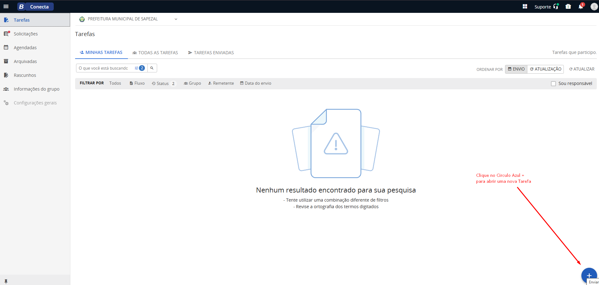
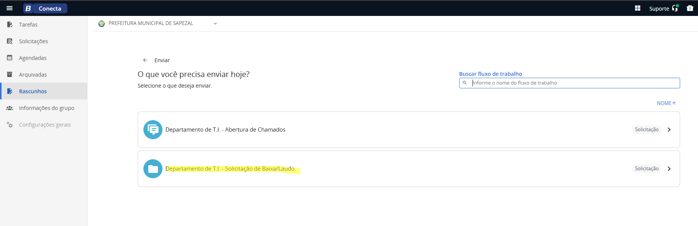
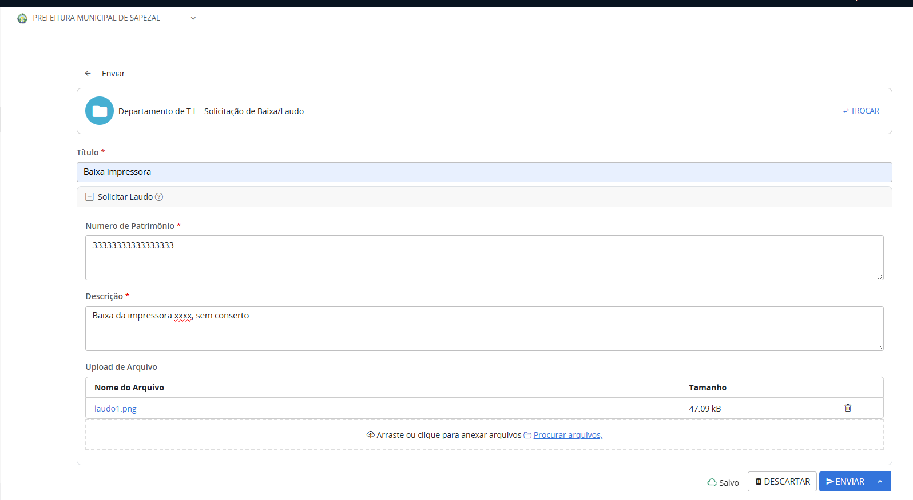
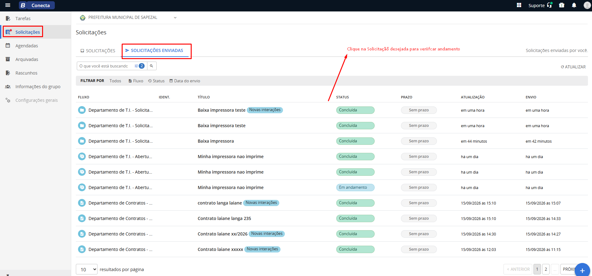

Passo a passo para pedir ao Departamento de T.I. a baixa de um equipamento com laudo e acompanhar o andamento.
Fluxo do Conecta para pedir ao Departamento de T.I. a baixa de um equipamento com laudo, informando o número de patrimônio e o motivo.
Na tela de Tarefas, clique no botão azul redondo com o sinal de + (canto inferior direito).

Clique em Departamento de T.I. - Solicitação de Baixa/Laudo. Atenção: não é o fluxo de Abertura de Chamados.

O formulário Solicitar Laudo será exibido. Preencha as informações (veja a tabela abaixo).

Com tudo preenchido, clique em ENVIAR (botão azul no canto inferior direito). O T.I. recebe a solicitação e dá andamento.
| Campo | O que colocar |
|---|---|
| Título * | Resumo curto do pedido. Ex.: Baixa impressora. |
| Número de Patrimônio * | Número de patrimônio do equipamento. Confira na etiqueta antes de digitar. |
| Descrição * | Explique o motivo da baixa. Ex.: Baixa da impressora, sem conserto. |
| Upload de arquivo | Opcional. Anexe arquivos que ajudem na análise (ex.: foto ou documento do equipamento). |
* Campos obrigatórios.
Clique em Solicitações no menu e abra a aba Solicitações enviadas. Clique na solicitação desejada para verificar o andamento.
